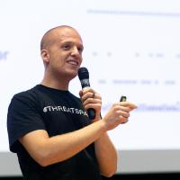

Equipo

Jai Dhyani
CTO
Ingeniero de ML
10 años
Coautor de RE-Bench: de METR
seguimiento del horizonte temporal de agentes de código: "The Chart" METR Horizon v1.1 · tiempo de duplicación ~129 días desde 2023
METR Horizon v1.1 · tiempo de duplicación ~129 días desde 2023
METR Horizon v1.1 · tiempo de duplicación ~129 días desde 2023

Scott Wofford
CEO
Gerente Principal de Producto Técnico
9 años
Lanzó funciones de IA para 500M de clientes.
Generó: $6.8B en Ventas, $4.5B en ganancias.


Distribución
La misma estrategia que construyó Auth0.
Estamos construyendo control y cumplimiento de IA que a los desarrolladores les encanta.

$6.5B
Auth0 fue fundada en 2013 como un SDK de identidad para desarrolladores. En mayo de 2021, Okta la adquirió por $6.5B, a pesar de que Okta ya vendía su propio producto de identidad para clientes. Auth0 había construido "a developer first bottoms up acquisition strategy."1
Tracción
Los usuarios realmente quieren esto

"Vi el sitio web e inmediatamente pensé, 'Quiero eso.' Es como un CLAUDE.md que realmente funciona."
Nicolas Mesa, Cofundador y CTO, Veleiro AI
"Podría hacer quizás 30–50% más tareas en paralelo… se trata de liberar recursos cognitivos."
Elvis Sikora, Ingeniero de IA, CloudWalk

"Probablemente sería más valioso que Datadog… ~$100K/año para una organización con recursos razonables."
Sami Jawhar, Agent Wrangler, Trajectory Labs

"Si este problema se resolviera, duplicaría mi eficiencia para completar tareas."
Matthew Handzel, Startup de Seguridad de IA (stealth)
Lo que buscamos
$2M Pre-Seed


9 ángeles más en las últimas 48 horas